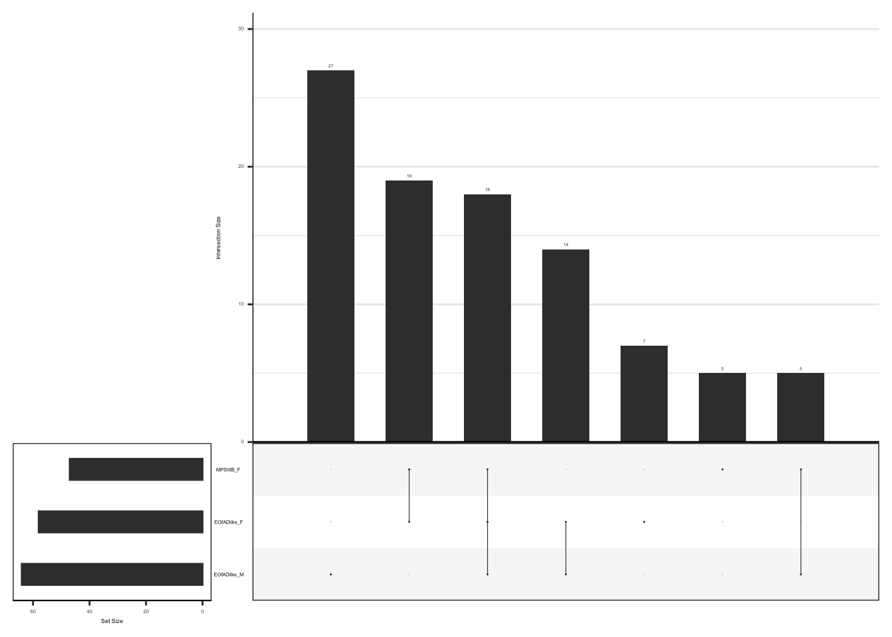
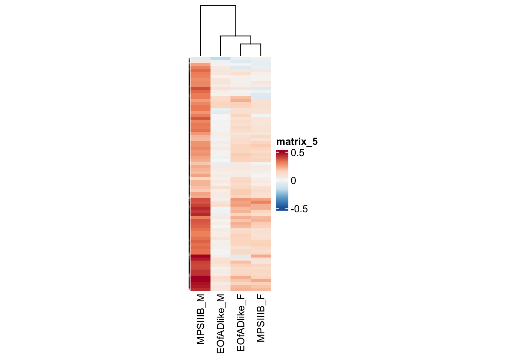

Last updated: 2024-11-01
Checks: 7 0
Knit directory:
2021_MPSIIIBvQ96-RNAseq-7dpfLarve/
This reproducible R Markdown analysis was created with workflowr (version 1.7.1). The Checks tab describes the reproducibility checks that were applied when the results were created. The Past versions tab lists the development history.
Great! Since the R Markdown file has been committed to the Git repository, you know the exact version of the code that produced these results.
Great job! The global environment was empty. Objects defined in the global environment can affect the analysis in your R Markdown file in unknown ways. For reproduciblity it’s best to always run the code in an empty environment.
The command set.seed(20211120) was run prior to running
the code in the R Markdown file. Setting a seed ensures that any results
that rely on randomness, e.g. subsampling or permutations, are
reproducible.
Great job! Recording the operating system, R version, and package versions is critical for reproducibility.
Nice! There were no cached chunks for this analysis, so you can be confident that you successfully produced the results during this run.
Great job! Using relative paths to the files within your workflowr project makes it easier to run your code on other machines.
Great! You are using Git for version control. Tracking code development and connecting the code version to the results is critical for reproducibility.
The results in this page were generated with repository version 7bb9ce6. See the Past versions tab to see a history of the changes made to the R Markdown and HTML files.
Note that you need to be careful to ensure that all relevant files for
the analysis have been committed to Git prior to generating the results
(you can use wflow_publish or
wflow_git_commit). workflowr only checks the R Markdown
file, but you know if there are other scripts or data files that it
depends on. Below is the status of the Git repository when the results
were generated:
Ignored files:
Ignored: .DS_Store
Ignored: .RData
Ignored: .Rapp.history
Ignored: .Rhistory
Ignored: .Rproj.user/
Ignored: analysis/.DS_Store
Ignored: code/.DS_Store
Ignored: code/fromHPC/.DS_Store
Ignored: code/fromHPC/smk/.DS_Store
Ignored: code/fromHPC/smk/slurm/.DS_Store
Ignored: data/.DS_Store
Ignored: data/Nhi_data/.DS_Store
Ignored: data/R_objects/.DS_Store
Ignored: data/R_objects/larvae/.DS_Store
Ignored: data/adult_brain/.DS_Store
Ignored: data/adult_brain/05_featureCounts/.DS_Store
Ignored: data/adult_brain/fastqc_raw/.DS_Store
Ignored: data/gene_sets/.DS_Store
Ignored: data/larvae/.DS_Store
Ignored: data/larvae/fastqc_align/.DS_Store
Ignored: data/larvae/fastqc_align_dedup/.DS_Store
Ignored: data/larvae/fastqc_raw/.DS_Store
Ignored: data/larvae/fastqc_trim/.DS_Store
Ignored: data/larvae/featureCounts/.DS_Store
Ignored: data/larvae/meta/.DS_Store
Ignored: data/larvae/starAlignLog/.DS_Store
Ignored: output/.DS_Store
Ignored: output/plots/
Ignored: output/plots4poster/.DS_Store
Ignored: output/plots4pub/
Untracked files:
Untracked: Rplot01.pdf
Untracked: Rplot02.png
Untracked: code/6mBrain_RNAseq_genoSex.rmd
Untracked: code/6mBrain_fems.rmd
Untracked: code/HS.R
Untracked: code/about.Rmd
Untracked: code/analysis.Rmd
Untracked: code/analysis_final.rmd
Untracked: code/analysis_final_v2.rmd
Untracked: code/checkGenotypes.rmd
Untracked: code/explorationRUV.Rmd
Untracked: code/genotypeCheck.Rmd
Untracked: code/license.Rmd
Untracked: code/nhi6mdata.rmd
Untracked: code/plots4pub2.rmd
Untracked: code/plots4pub_RNAseq_afterreview1.R
Untracked: code/wgcna.rmd
Untracked: data/R_objects/adult_brain/HMPKEGG_6m_brain_genosex_CQN.rds
Untracked: data/R_objects/adult_brain/HMP_ire_6m_brain_genosex_CQN.rds
Untracked: data/R_objects/adult_brain/cqn_logCPM_6m_brain.rds
Untracked: data/R_objects/adult_brain/dge_6m_brain_cqn.rds
Untracked: data/R_objects/adult_brain/fry_cell_6m_brain_genosex_CQN.rds
Untracked: data/R_objects/adult_brain/fry_cell_RNAseq.rds
Untracked: data/R_objects/adult_brain/goseqtibbles_6m_brain_genosex_CQN.rds
Untracked: data/R_objects/adult_brain/hmp.kegg.rna.rds
Untracked: data/R_objects/adult_brain/toptablescqn_bysex.rds
Untracked: data/allLLIDs.rds
Untracked: data/ensembl_zebrafish.rds
Untracked: data/proteomics/
Untracked: data/with_go_evidence.rds
Untracked: dre00020.pathview.multi.png
Untracked: dre00020.png
Untracked: dre00020.xml
Untracked: hsa04650.EOfADproteomes.multi.png
Untracked: hsa04650.MPSIIIBproteomes.multi.png
Untracked: hsa04650.png
Untracked: hsa04650.xml
Untracked: hsa04666.EOfADproteomes.multi.png
Untracked: hsa04666.MPSIIIBproteomes.multi.png
Untracked: hsa04666.png
Untracked: hsa04666.xml
Untracked: larvae dre00020.pathview.multi.png
Untracked: output/DE_proteins_for_string/
Untracked: output/GOenrichment_enrichmentTable.csv
Untracked: output/plots4RADposter/
Untracked: output/plots4kim/
Untracked: output/plots4pub2/
Untracked: output/plots4pub3/
Untracked: output/spreadsheets/RNAseqlarvae_celltypeFry.xlsx
Untracked: output/spreadsheets/RNAseqlarvae_hmpoutputs.xlsx
Untracked: output/spreadsheets/geneset_RNAseq_v2.xlsx
Untracked: output/spreadsheets/goseq_RNAseq_v2.xlsx
Untracked: output/spreadsheets/limma_proteomics_6mbrain.xlsx
Untracked: output/spreadsheets/proteomics_6mbrain_hmpoutputs.xlsx
Untracked: output/spreadsheets/toptables_RNAseq_v2.xlsx
Untracked: temp.png
Unstaged changes:
Deleted: analysis/6mBrain_fems.rmd
Deleted: analysis/HS.R
Deleted: analysis/about.Rmd
Deleted: analysis/analysis.Rmd
Deleted: analysis/analysis_adultbrain.knit.md
Deleted: analysis/analysis_final.rmd
Deleted: analysis/checkGenotypes.rmd
Deleted: analysis/explorationRUV.Rmd
Deleted: analysis/genotypeCheck.Rmd
Deleted: analysis/license.Rmd
Deleted: analysis/nhi6mdata.rmd
Deleted: analysis/plots4pub2.rmd
Modified: data/R_objects/adult_brain/dge.rds
Modified: data/R_objects/adult_brain/hmp_ire.rds
Modified: data/R_objects/adult_brain/logcpm.rds
Modified: data/R_objects/larvae/celltype_larvae.rds
Modified: data/R_objects/larvae/dge.rds
Modified: data/R_objects/larvae/hmp_ire.rds
Modified: data/R_objects/larvae/hmp_kegg.rds
Modified: data/R_objects/larvae/logcpm.rds
Modified: data/R_objects/larvae/toptablescqn.rds
Modified: data/adult_brain/karissas_metadata.xlsx
Modified: output/spreadsheets/toptables_cqn.xlsx
Note that any generated files, e.g. HTML, png, CSS, etc., are not included in this status report because it is ok for generated content to have uncommitted changes.
These are the previous versions of the repository in which changes were
made to the R Markdown (analysis/analysis_adultbrain.rmd)
and HTML (docs/analysis_adultbrain.html) files. If you’ve
configured a remote Git repository (see ?wflow_git_remote),
click on the hyperlinks in the table below to view the files as they
were in that past version.
| File | Version | Author | Date | Message |
|---|---|---|---|---|
| Rmd | 7bb9ce6 | Karissa Barthelson | 2024-11-01 | wflow_publish("analysis/*") |
| Rmd | 6e89e87 | Karissa Barthelson | 2023-09-02 | final analysis complete |
| Rmd | 9f57eae | Karissa Barthelson | 2023-04-28 | test |
| Rmd | 973da7b | Karissa Barthelson | 2023-03-09 | Message that describes what this change does |
| Rmd | 6d8b85a | Karissa Barthelson | 2023-03-03 | added adult brain |
library(tidyverse)
library(magrittr)
library(readxl)
library(ngsReports)
library(AnnotationHub)
library(pander)
library(scales)
library(pheatmap)
library(ggpubr)
library(msigdbr)
library(scales)
library(ggrepel)
library(ggfortify)
library(RColorBrewer)
library(ComplexHeatmap)
library(tidyHeatmap)
library(circlize)
library(UpSetR)
library(edgeR)
library(goseq)
library(fgsea)
library(cqn)
library(kableExtra)
library(harmonicmeanp)
library(ssizeRNA)
theme_set(
theme_bw() +
theme(
plot.title = element_text(hjust = 0.5)
))ah <- AnnotationHub() %>%
subset(species == "Danio rerio") %>%
subset(rdataclass == "EnsDb")
ensDb <- ah[["AH83189"]] # for release 101, latest version and the alignment
grTrans <- transcripts(ensDb)
trLengths <- exonsBy(ensDb, "tx") %>%
width() %>%
vapply(sum, integer(1))
mcols(grTrans)$length <- trLengths[names(grTrans)]
gcGene <- grTrans %>%
mcols() %>%
as.data.frame() %>%
dplyr::select(gene_id, tx_id, gc_content, length) %>%
as_tibble() %>%
group_by(gene_id) %>%
summarise(
gc_content = sum(gc_content*length) / sum(length),
length = ceiling(median(length))
)
grGenes <- genes(ensDb)
mcols(grGenes) %<>%
as.data.frame() %>%
left_join(gcGene) %>%
as.data.frame() %>%
DataFrame()# readin meta and tidy up columns
meta <- read_excel("data/adult_brain/karissas_metadata.xlsx", sheet = "onlyseq") %>%
mutate(genotype = case_when(
`usable genotype?` == "wt" ~ "wt",
`usable genotype?` == "EOfAD" ~ "EOfADlike",
`usable genotype?` == "MPS-III" ~ "MPSIIIB"
) %>%
factor(levels = c("wt", "EOfADlike", "MPSIIIB")),
tank = as.factor(tank),
sex = as.factor(sex),
sample = paste0(fish, "_", genotype),
group = paste0(genotype, "_", sex) %>% as.factor(),
age = "6 m adult brain",
RIN = as.numeric(`RIN/DIN`)
) %>%
dplyr::select(
# reorder the metadata nicely
fish,genotype,sex,group,batch,tank,RIN,everything()
) %>%
as_tibble()# read in counts and cleanup
featureCounts <-
read_delim("data/adult_brain/05_featureCounts/counts.out", delim = "\t", skip = 1) %>%
set_names(basename(names(.))) %>%
set_names(names(.) %>% str_remove(pattern = "_S[0-9]+_merged.Aligned.sortedByCoord.dedup.out.bam")) %>%
as_tibble() %>%
dplyr::select(-c(Chr, Start, End, Length, Strand)) %>%
gather(key = "ULN", value = "counts", starts_with("22")) %>%
left_join(meta) %>%
mutate(sample = paste0(fish, "_", genotype)) %>%
dplyr::select(Geneid, counts, sample) %>%
spread(key = "sample", value = "counts") %>%
column_to_rownames("Geneid") %>%
.[,1:24]Genes which are lowly expressed are considered uninformative for de analysis. Here, we set the threshold to be a min CPM of 0.5 (following the 10/min lib size rule proposed by gordon smyth). The effect of filtering is found below.
DGEList objects were created, which brings together the sample metadata and counts in each experiment. TMM normalisation to the counts is also applied when making these objects.
a <- featureCounts %>%
cpm(log = TRUE) %>%
as.data.frame() %>%
pivot_longer(
cols = everything(),
names_to = "sample",
values_to = "logCPM"
) %>%
split(f = .$sample) %>%
lapply(function(x){
d <- density(x$logCPM)
tibble(
sample = unique(x$sample),
x = d$x,
y = d$y
)
}) %>%
bind_rows() %>%
left_join(meta) %>%
ggplot(aes(x, y, colour = genotype, group = sample)) +
geom_line() +
labs(
x = "logCPM",
y = "Density",
colour = "genotype"
)+
ggtitle("Before filtering") +
theme_bw()
b <- featureCounts %>%
.[rowSums(cpm(.) >= 0.5) >= 8,] %>%
cpm(log = TRUE) %>%
as.data.frame() %>%
pivot_longer(
cols = everything(),
names_to = "sample",
values_to = "logCPM"
) %>%
split(f = .$sample) %>%
lapply(function(x){
d <- density(x$logCPM)
tibble(
sample = unique(x$sample),
x = d$x,
y = d$y
)
}) %>%
bind_rows() %>%
left_join(meta) %>%
ggplot(aes(x, y, colour = genotype, group = sample)) +
geom_line() +
labs(
x = "logCPM",
y = "Density",
colour = "genotype"
)+
ggtitle("After filtering")
ggarrange(a, b, common.legend = TRUE)x <- featureCounts %>%
as.matrix() %>%
.[rowSums(cpm(.) >= 0.5) >= 8,] %>%
DGEList(
samples = tibble(sample = colnames(.)) %>%
left_join(meta),
genes = grGenes[rownames(.)] %>%
as.data.frame() %>%
dplyr::select(
chromosome = seqnames, start, end,
gene_id, gene_name, gene_biotype, description, entrezid
) %>%
left_join(gcGene) %>%
as_tibble()
) %>%
calcNormFactors()I first want to explore the overall similarity between samples by PCA. No distinct clusters of samples are observed. However, there might be some subtle seperatation of the MPS IIIB mutants.
x %>%
cpm(log=TRUE) %>%
t() %>%
prcomp() %>%
autoplot(data = tibble(sample = rownames(.$x)) %>%
left_join(x$samples),
colour = "genotype",
shape = "sex",
size = 6
) +
theme(aspect.ratio = 1) +
labs(colour = "genotype") x$counts %>%
cpm(log=TRUE) %>%
t() %>%
prcomp() %>%
autoplot(data = tibble(sample = rownames(.$x)) %>%
left_join(x$samples),
colour = "sex",
size = 6
) +
theme(aspect.ratio = 1) +
labs(colour = "Sex") x$counts %>%
cpm(log=TRUE) %>%
t() %>%
prcomp() %>%
autoplot(data = tibble(sample = rownames(.$x)) %>%
left_join(x$samples),
colour = "tank",
size = 6
) +
theme(aspect.ratio = 1) +
labs(colour = "Tank") Since it is a bit hard to see whats going on within sexes, I will next perform PCAs on each sex seperately
fem.samples <- x$samples %>%
dplyr::filter(sex == "F") %>%
rownames()
male.samples <- x$samples %>%
dplyr::filter(sex == "M") %>%
rownames()
x %>%
cpm(log = TRUE) %>%
.[,fem.samples] %>%
t %>%
prcomp() %>%
autoplot(data = tibble(sample = rownames(.$x)) %>%
left_join(x$samples),
colour = "genotype",
shape = "sex",
size = 6
) +
theme(aspect.ratio = 1) +
labs(
title = "Females"
)x %>%
cpm(log = TRUE) %>%
.[,male.samples] %>%
t %>%
prcomp() %>%
autoplot(data = tibble(sample = rownames(.$x)) %>%
left_join(x$samples),
colour = "genotype",
shape = "sex",
size = 6
) +
theme(aspect.ratio = 1) +
labs(
title = "Males"
)For this analysis, I will keep the model matrix simple and look at only effect of genotype. This should be sufficient to look for bias due to GC and length, ans so whether CQN is required.
design.simple <- model.matrix(~genotype, data = x$samples) %>%
set_colnames(gsub(colnames(.), pattern = "genotype", replacement = ""))
fit_1 <- x %>%
estimateDisp(design.simple) %>%
glmFit(design.simple)
toptable_1 <- design.simple %>% colnames() %>% .[2:3] %>%
sapply(function(x){
glmLRT(fit_1, coef = x) %>%
topTags(n = Inf) %>%
.[["table"]] %>%
as_tibble() %>%
arrange(PValue) %>%
mutate(
coef = x,
DE = FDR < 0.05
) %>%
dplyr::select(
gene_name, logFC, logCPM, PValue, FDR, DE, everything()
)
}, simplify = FALSE)
toptable_1 %>%
bind_rows() %>%
ggplot(aes(y = -log10(PValue), x = logFC, colour = DE)) +
geom_point(
alpha = 0.5, size = 1.25
) +
facet_wrap(~coef) +
# geom_label_repel(
# aes(label = gene_name),
# data = . %>% dplyr::filter(FDR < 0.05),
# show.legend = FALSE
# ) +
coord_cartesian(xlim = c(-2.5,2.5),
ylim = c(0, 20) )+
theme(legend.position = "none") +
scale_color_manual(values = c("grey50", "red")) toptable_1 %>%
bind_rows() %>%
ggplot(aes(x = logCPM, y = logFC, colour = DE)) +
geom_point(
alpha = 0.5
) +
facet_wrap(~coef) +
# geom_label_repel(
# aes(label = gene_name),
# data = . %>% dplyr::filter(FDR < 0.05),
# show.legend = FALSE
# ) +
theme(legend.position = "none") +
scale_color_manual(values = c("grey50", "red"))ggarrange(
toptable_1 %>%
bind_rows() %>%
mutate(rankstat = sign(logFC)*-log10(PValue)) %>%
ggplot(aes(x = length, y = rankstat)) +
geom_point(
aes(colour = DE),
alpha = 0.5
) +
geom_smooth(se = FALSE, method = "gam") +
facet_grid(rows = vars(coef)) +
theme_bw() +
theme(legend.position = "none") +
scale_color_manual(values = c("grey50", "red")) +
scale_x_log10()+
labs(x = "Average transcript length per gene",
colour = "Differentially expressed?",
y = "sign(logFC)*-log10(PValue)") +
coord_cartesian(ylim = c(-10, 10)),
toptable_1 %>%
bind_rows() %>%
mutate(rankstat = sign(logFC)*-log10(PValue)) %>%
ggplot(aes(x = gc_content, y = rankstat)) +
geom_point(
aes(colour = DE),
alpha = 0.5
) +
geom_smooth(se = FALSE, method = "gam") +
facet_grid(rows = vars(coef)) +
theme_bw() +
theme(legend.position = "none") +
scale_color_manual(values = c("grey50", "red")) +
coord_cartesian(ylim = c(-10,10)) +
labs(x = "Weighted average GC content (%) per gene",
colour = "Differentially expressed?",
y = "sign(logFC)*-log10(PValue)"),
common.legend = TRUE,
labels = "AUTO"
) Some bias is observed, and so CQN will be applied.
cqn <-
x %>%
with(
cqn(
counts = counts,
x = genes$gc_content,
lengths = genes$length,
sizeFactors = samples$lib.size
)
)
#
logCPM <- cqn$y + cqn$offsetpar(mfrow = c(1, 2))
cqnplot(cqn, n = 1, xlab = "GC Content")
cqnplot(cqn, n = 2, xlab = "Length")Model fits for GC content and gene length under the CQN model. Variability is clearly visible at either end
par(mfrow = c(1, 1))PCA analysis was repeated. Similar clustering of samples was observed, with MPS-IIIA samples appearing to form a more distinct cluster from the rest of the samples. The sgsh/+ samples appear much more variable.
genocols = c("#000000", "#DBDB2F", "#377EB8")
ggarrange(
cpm(x, log = T) %>%
t() %>%
prcomp() %>%
autoplot(data = tibble(sample = rownames(.$x)) %>%
left_join(x$samples),
colour = "genotype",
shape = "sex",
size = 4
) +
scale_colour_manual(values = genocols) +
theme(aspect.ratio = 1) +
ggtitle("Before CQN"),
logCPM %>%
t() %>%
prcomp() %>%
autoplot(data = tibble(sample = rownames(.$x)) %>%
left_join(x$samples),
colour = "genotype",
size = 4
) +
scale_colour_manual(values = genocols) +
theme(aspect.ratio = 1) +
ggtitle("After CQN"),
common.legend = T,
labels = "AUTO"
) #ggsave("plotsforpub/PCA_cqn.png", width = 18, height = 8, units = "cm", scale = 1.4)The DE analysis was then repeated, this time including the offset
generated by cqn in the model.
Will also create a new design and contrasts matrices to be able to determine the DEGs within sexes.
# Add the offset to the dge object
x$offset <- cqn$glm.offset
# new desing matrix
design.bygroup <-
model.matrix(~0 + group, data = x$samples %>%
droplevels()) %>%
set_colnames(gsub(colnames(.), pattern = "group", replacement = ""))
contrasts <- makeContrasts(
MPSIIIB_M - wt_M , # effect of MPS IIIB in males
MPSIIIB_F - wt_F, # effect of MPS IIIB in females
EOfADlike_M - wt_M, # effect of EOfAD in males
EOfADlike_F - wt_F, # effect of EOfAD in females
levels = design.bygroup
)
# fit the glm
fit_cqn_simple <- x %>%
estimateDisp(design.simple) %>%
glmFit(design.simple)
fit_cqn_bysex <- x %>%
estimateDisp(design.bygroup) %>%
glmFit(design.bygroup)
# call toptables
toptables_cqn_simple <- design.simple %>% colnames() %>% .[2:3] %>%
sapply(function(x){
glmLRT(fit_cqn_simple, coef = x) %>%
topTags(n = Inf) %>%
.[["table"]] %>%
as_tibble() %>%
arrange(PValue) %>%
mutate(
coef = x,
DE = FDR < 0.05
) %>%
dplyr::select(
gene_name, logFC, logCPM, PValue, FDR, DE, everything()
)
}, simplify = FALSE)
toptables_cqn_bygroup <-
colnames(contrasts) %>%
sapply(function(x) {
glmLRT(fit_cqn_bysex, contrast = contrasts[,x]) %>%
topTags(n = Inf) %>%
.[["table"]] %>%
as_tibble() %>%
arrange(PValue) %>%
mutate(
coef = x,
coef = str_remove(coef, pattern = " - .+"),
DE = FDR < 0.05
) %>%
dplyr::select(
gene_name, logFC, logCPM, PValue, FDR, DE, everything()
)
}, simplify = FALSE)
# tidy up the names of this.
names(toptables_cqn_bygroup) %<>%
str_remove(pattern = " - .+")toptables_cqn_bygroup %>%
lapply(function(y) {
y %>%
mutate(
direction = sign(logFC), .after = logFC
) %>%
dplyr::filter(DE == TRUE) %>%
group_by(direction) %>%
summarise(n = n())
})$MPSIIIB_M
# A tibble: 2 × 2
direction n
<dbl> <int>
1 -1 141
2 1 212
$MPSIIIB_F
# A tibble: 2 × 2
direction n
<dbl> <int>
1 -1 123
2 1 77
$EOfADlike_M
# A tibble: 2 × 2
direction n
<dbl> <int>
1 -1 3
2 1 1
$EOfADlike_F
# A tibble: 2 × 2
direction n
<dbl> <int>
1 -1 11
2 1 1toptables_cqn_bygroup %>% lapply(dplyr::filter, DE == T)$MPSIIIB_M
# A tibble: 353 × 17
gene_name logFC logCPM PValue FDR DE chromosome start end
<chr> <dbl> <dbl> <dbl> <dbl> <lgl> <fct> <int> <int>
1 tmem14cb -3.10 1.62 1.12e-31 2.14e-27 TRUE 24 3.61e7 3.61e7
2 si:ch1073-16… 4.26 -0.244 2.77e-27 2.64e-23 TRUE 24 3.86e7 3.87e7
3 im:7160594 1.00 3.14 1.47e-22 9.32e-19 TRUE 24 3.92e7 3.92e7
4 dnaaf3l 2.04 0.439 4.81e-22 2.29e-18 TRUE 24 3.69e7 3.69e7
5 mybpc2b 5.39 3.21 3.10e-17 1.18e-13 TRUE 24 3.83e7 3.83e7
6 CU651662.1 2.62 2.03 1.43e-16 4.55e-13 TRUE 7 7.15e7 7.15e7
7 tspan36 1.21 2.78 1.37e-13 3.73e-10 TRUE 8 2.97e7 2.97e7
8 si:ch211-234… -0.826 4.14 3.55e-13 8.45e-10 TRUE 24 3.82e7 3.82e7
9 cluap1 -0.613 4.54 4.46e-13 9.23e-10 TRUE 24 3.75e7 3.75e7
10 sb:cb1058 2.01 0.0176 4.84e-13 9.23e-10 TRUE 7 2.50e7 2.50e7
# ℹ 343 more rows
# ℹ 8 more variables: gene_id <chr>, gene_biotype <chr>, description <chr>,
# entrezid <named list>, gc_content <dbl>, length <dbl>, LR <dbl>, coef <chr>
$MPSIIIB_F
# A tibble: 200 × 17
gene_name logFC logCPM PValue FDR DE chromosome start end
<chr> <dbl> <dbl> <dbl> <dbl> <lgl> <fct> <int> <int>
1 tmem14cb -2.86 1.62 6.55e-38 1.25e-33 TRUE 24 3.61e7 3.61e7
2 dnaaf3l 2.07 0.439 2.92e-19 2.78e-15 TRUE 24 3.69e7 3.69e7
3 si:ch1073-16… 3.08 -0.244 9.15e-19 5.82e-15 TRUE 24 3.86e7 3.87e7
4 cluap1 -0.619 4.54 4.56e-14 2.17e-10 TRUE 24 3.75e7 3.75e7
5 mybphb -1.72 1.98 6.77e-14 2.58e-10 TRUE 6 5.50e7 5.51e7
6 c7b -1.60 4.77 8.06e-13 2.56e- 9 TRUE 21 2.09e7 2.09e7
7 plp1a -1.20 4.65 1.37e-12 3.74e- 9 TRUE 14 1.46e7 1.46e7
8 sb:cb1058 2.20 0.0176 7.54e-12 1.80e- 8 TRUE 7 2.50e7 2.50e7
9 bri3 0.672 5.53 1.32e-11 2.79e- 8 TRUE 3 6.14e7 6.14e7
10 gpd1c 1.43 1.56 1.75e-11 3.33e- 8 TRUE 19 3.18e5 3.26e5
# ℹ 190 more rows
# ℹ 8 more variables: gene_id <chr>, gene_biotype <chr>, description <chr>,
# entrezid <named list>, gc_content <dbl>, length <dbl>, LR <dbl>, coef <chr>
$EOfADlike_M
# A tibble: 4 × 17
gene_name logFC logCPM PValue FDR DE chromosome start end
<chr> <dbl> <dbl> <dbl> <dbl> <lgl> <fct> <int> <int>
1 nenf 0.958 2.53 3.12e-10 5.94e-6 TRUE 17 4.54e7 4.54e7
2 zgc:172014 -3.18 -0.146 1.05e- 6 1.00e-2 TRUE 4 3.08e7 3.08e7
3 col12a1a -1.43 3.53 4.52e- 6 2.87e-2 TRUE 17 4.98e7 5.00e7
4 si:dkey-170l10.1 -1.13 0.832 1.03e- 5 4.93e-2 TRUE 17 3.16e7 3.16e7
# ℹ 8 more variables: gene_id <chr>, gene_biotype <chr>, description <chr>,
# entrezid <named list>, gc_content <dbl>, length <dbl>, LR <dbl>, coef <chr>
$EOfADlike_F
# A tibble: 12 × 17
gene_name logFC logCPM PValue FDR DE chromosome start end
<chr> <dbl> <dbl> <dbl> <dbl> <lgl> <fct> <int> <int>
1 si:dkey-13p1.3 -1.61 0.215 1.76e-9 3.36e-5 TRUE 17 3.16e7 3.16e7
2 si:ch211-213a13… -3.47 1.87 9.97e-9 9.51e-5 TRUE 22 8.98e6 9.00e6
3 si:dkey-71b5.7 -3.46 0.926 4.05e-7 2.57e-3 TRUE 16 2.19e7 2.20e7
4 si:ch211-213a13… -2.91 1.14 9.49e-7 3.98e-3 TRUE 22 9.06e6 9.10e6
5 traf3ip2l -3.19 1.04 1.04e-6 3.98e-3 TRUE 6 3.69e7 3.69e7
6 si:dkey-253d23.4 -2.51 1.70 1.25e-6 3.98e-3 TRUE 22 9.87e6 9.88e6
7 mybpc2b -2.84 3.21 2.19e-6 5.96e-3 TRUE 24 3.83e7 3.83e7
8 si:ch211-261n11… -2.68 1.41 4.11e-6 9.79e-3 TRUE 8 2.25e7 2.25e7
9 BX322618.1 -2.71 2.91 2.13e-5 4.24e-2 TRUE 20 1.22e7 1.22e7
10 si:ch73-21k16.5 1.12 3.88 2.39e-5 4.24e-2 TRUE 20 4.69e7 4.69e7
11 rad51 -1.61 2.13 2.45e-5 4.24e-2 TRUE 20 4.64e7 4.64e7
12 timm23b -1.94 -0.0258 2.67e-5 4.24e-2 TRUE 13 3.88e6 3.93e6
# ℹ 8 more variables: gene_id <chr>, gene_biotype <chr>, description <chr>,
# entrezid <named list>, gc_content <dbl>, length <dbl>, LR <dbl>, coef <chr>toptables_cqn_simple %>%
lapply(function(y) {
y %>%
mutate(
direction = sign(logFC), .after = logFC
) %>%
dplyr::filter(DE == TRUE) %>%
group_by(direction) %>%
summarise(n = n())
})$EOfADlike
# A tibble: 2 × 2
direction n
<dbl> <int>
1 -1 10
2 1 1
$MPSIIIB
# A tibble: 2 × 2
direction n
<dbl> <int>
1 -1 333
2 1 284toptables_cqn_simple %>%
bind_rows() %>%
ggplot(aes(y = -log10(PValue), x = logFC, colour = DE)) +
geom_point(
alpha = 0.5, size = 1.25
) +
facet_wrap(~coef) +
# geom_label_repel(
# aes(label = gene_name),
# data = . %>% dplyr::filter(FDR < 0.05),
# show.legend = FALSE
# ) +
coord_cartesian(xlim = c(-2.5,2.5),
ylim = c(0, 20) )+
theme(legend.position = "none") +
scale_color_manual(values = c("grey50", "red")) toptables_cqn_bygroup %>%
bind_rows() %>%
ggplot(aes(y = -log10(PValue), x = logFC, colour = DE)) +
geom_point(
alpha = 0.5, size = 1.25
) +
facet_wrap(~coef) +
# geom_label_repel(
# aes(label = gene_name),
# data = . %>% dplyr::filter(FDR < 0.05),
# show.legend = FALSE
# ) +
coord_cartesian(xlim = c(-2.5,2.5),
ylim = c(0, 20) )+
theme(legend.position = "none") +
scale_color_manual(values = c("grey50", "red")) toptables_cqn_bygroup %>%
bind_rows() %>%
ggplot(aes(x = logCPM, y = logFC)) +
geom_point(
aes(colour = DE),
alpha = 0.5
) +
facet_wrap(~coef, ncol = 1) +
theme(legend.position = "none") +
scale_color_manual(values = c("grey50", "red")) +
geom_smooth(se = F)I now am going to test the KEGG, gene ontology (GO), iron-responsive element (IRE), cell type markers and chromosomal location gene sets to determine whether any of them display changes to gene expression as a group. The gene sets were obtained from MSIGDB using the msigdbr package.
The KEGG and GO terms were obtained from msigdb using msigdbr. These gene sets were filtered to only contain the genes above the detectable threshold in this experiment. Also, any gene sets with less than 5 genes were omitted, as these probably arent very biologically meaninigful. The GO terms were also restricted to those with 3 or more steps back to the ontology root terms.
The iron-responsive element (IRE) genes were obtained from Hin et al. 2021 (DOI: 10.3233/JAD-210200). The zebrafish IRE-containing genes were used, and were also filtered to only retain the detectable genes.
The chromosome gene sets were generated from the DGE object.
The cell type marker gene sets were obtained from the single-cell RNA-seq data of Jiang et al. 2021 (https://doi.org/10.3389/fcell.2021.743421)/
# Obtain the KEGG gene sets.
KEGG <- msigdbr("Danio rerio", category = "C2", subcategory = "CP:KEGG") %>%
left_join(x$genes, by = c("gene_symbol" = "gene_name")) %>%
dplyr::filter(gene_id %in% rownames(x)) %>%
distinct(gs_name, gene_id, .keep_all = TRUE) %>%
split(f = .$gs_name) %>%
lapply(extract2, "gene_id")
# calculate the number of genes per gene set
sizes <- KEGG %>%
lapply(length) %>%
unlist %>%
as.data.frame() %>%
set_colnames( "n_genes") %>%
rownames_to_column("gs")
# retain gene sets with at least 3 genes in it
KEGG <- KEGG[sizes %>% dplyr::filter(n_genes > 3) %>% .$gs]
# GO Terms summaries that The UofA biohub made.
goSummaries <- url("https://uofabioinformaticshub.github.io/summaries2GO/data/goSummaries.RDS") %>%
readRDS() %>%
mutate(
Term = Term(id),
gs_name = Term %>% str_to_upper() %>% str_replace_all("[ -]", "_"),
gs_name = paste0("GO_", gs_name)
)
minPath <- 3
# obtain the GO terms
GO <-
msigdbr("Danio rerio", category = "C5") %>%
dplyr::filter(grepl(gs_name, pattern = "^GO")) %>%
left_join(x$genes, by = c("gene_symbol" = "gene_name")) %>%
dplyr::filter(gene_id %in% rownames(x)) %>%
mutate(gs_name = str_replace(gs_name, pattern = "GOBP_", replacement = "GO_")) %>%
mutate(gs_name = str_replace(gs_name, pattern = "GOMF_", replacement = "GO_")) %>%
mutate(gs_name = str_replace(gs_name, pattern = "GOCC_", replacement = "GO_")) %>%
left_join(goSummaries) %>%
dplyr::filter(shortest_path >= minPath) %>%
distinct(gs_name, gene_id, .keep_all = TRUE) %>%
split(f = .$gs_name) %>%
lapply(extract2, "gene_id")
GOdf <- msigdbr("Danio rerio", category = "C5") %>%
dplyr::filter(grepl(gs_name, pattern = "^GO")) %>%
left_join(x$genes, by = c("gene_symbol" = "gene_name")) %>%
dplyr::filter(gene_id %in% rownames(x)) %>%
mutate(
gs_full_name = gs_name,
gs_name = str_replace(gs_name, pattern = "GOBP_", replacement = "GO_"),
gs_name = str_replace(gs_name, pattern = "GOMF_", replacement = "GO_"),
gs_name = str_replace(gs_name, pattern = "GOCC_", replacement = "GO_")
) %>%
left_join(goSummaries) %>%
dplyr::filter(shortest_path >= minPath) %>%
distinct(gs_name, gene_id, .keep_all = TRUE)
sizes_GO <- GO %>%
lapply(length) %>%
unlist %>%
as.data.frame() %>%
set_colnames( "n_genes") %>%
rownames_to_column("gs")
# retain gene sets with at least 3 genes in it
GO <- GO[sizes_GO %>% dplyr::filter(n_genes > 3) %>% .$gs]
ireGenes <- readRDS("data/gene_sets/zebrafishireGenes.rds") %>%
unlist() %>%
as.data.frame() %>%
rownames_to_column("ire") %>%
as_tibble() %>%
mutate(ire = str_extract(ire, pattern = "ire[:digit:]_[:alpha:]+")) %>%
set_colnames(c("ire", "gene_id")) %>%
dplyr::filter(gene_id %in% rownames(x)) %>%
split(f = .$ire) %>%
lapply(magrittr::extract2,"gene_id")
chr <- x$genes %>%
dplyr::select(gene_id, chromosome) %>%
split(f = .$chromosome) %>%
lapply(extract2, "gene_id") %>%
.[c("MT", seq(1:25))] # omit the ALT chromosmes and scaffolds
cell_type_markers <-
read_xlsx("data/gene_sets/Suppdata2_jiangetal_2021_fcelldev.xlsx", sheet = "Brain") %>%
dplyr::rename("gene_name" = gene) %>%
left_join(x$genes) %>%
dplyr::filter(gene_id %in% rownames(x)) %>%
split(f = .$`cell type`) %>%
lapply(extract2, "gene_id")
cell_type_markers %<>%
lapply(function(y) {
y[y %in% rownames(x)]
})I first will look at enrichment of GO terms within the DE genes using goseq. I like goseq as it lets you include a covariate. Since there was still a bit of bias left after cqn for gene length, i will use this as the covariate.
pwfs <-
c(toptables_cqn_bygroup, toptables_cqn_simple) %>%
lapply(function(y) {
y %>%
with(
nullp(
DEgenes = structure(DE, names = gene_id),
bias.data = length
)
)
})goseq.results <-
pwfs %>%
lapply(function(y) {
goseq(y, gene2cat = GO) %>%
as_tibble() %>%
mutate(
FDR = p.adjust(over_represented_pvalue, method = "fdr")
) %>%
dplyr::select(-under_represented_pvalue) %>%
left_join(GOdf %>% dplyr::select(category = gs_name, gs_subcat) %>% unique) %>%
dplyr::select(GO = category, GO_subcat = gs_subcat, everything())
})
goseq.results %<>%
map2(names(.), ~.x %>% mutate(coef = .y)) Since I’m not detecting any significant gene sets in the EOfAD-like mutants, I need to try another method. I will use the harmonic mean p val method which combines indivisual p vals from 3 gene set enrichmen analysis methods: fry, camera and gsea.
# a function to run the HMP calculation.
runHMP = function(
geneset,
logCPM,
toptable,
design,
contrasts
) {
# run fry
fry <-
colnames(contrasts) %>%
sapply(function(y) {
logCPM %>%
limma::fry(
index = geneset,
design = design,
contrast = contrasts[,y],
sort = "mixed"
) %>%
rownames_to_column("pathway") %>%
as_tibble() %>%
mutate(
coef = y,
coef = str_remove(coef, pattern = " - wt.+")
)
}, simplify = FALSE)
# run camera
camera <- colnames(contrasts) %>%
sapply(function(y) {
logCPM %>%
limma::camera(
index = geneset,
design = design,
contrast = contrasts[,y]
) %>%
rownames_to_column("pathway") %>%
as_tibble() %>%
mutate(coef = y,
coef = str_remove(coef, pattern = " - wt.+"))
}, simplify = FALSE)
# create ranks for fgsea
ranks <-
sapply(toptable, function(y) {
y %>%
mutate(rankstat = sign(logFC) * log10(1/PValue)) %>%
arrange(rankstat) %>%
dplyr::select(c("gene_id", "rankstat")) %>% #only want the Pvalue with sign
with(structure(rankstat, names = gene_id)) %>%
rev() # reverse so the start of the list is upregulated genes
}, simplify = FALSE)
# run fgsea
set.seed(1)
fgsea <- ranks %>%
sapply(function(x){
fgseaMultilevel(stats = x,
pathways = geneset) %>%
as_tibble() %>%
dplyr::rename(FDR = padj) %>%
mutate(padj = p.adjust(pval, "bonferroni")) %>%
dplyr::select(pathway, pval, FDR, padj, everything()) %>%
arrange(pval)
}, simplify = F)
fgsea %<>%
map2(names(.), ~.x %>% mutate(coef = .y))
# calculate HMP
hmp <-
fry %>%
bind_rows() %>%
dplyr::select(pathway, PValue.Mixed, coef) %>%
dplyr::rename(fry_p = PValue.Mixed) %>%
left_join(camera %>%
bind_rows() %>%
dplyr::select(pathway, PValue, coef),
by = c("pathway", "coef")) %>%
dplyr::rename(camera_p = PValue) %>%
left_join(fgsea %>%
bind_rows() %>%
dplyr::select(pathway, pval, coef),
by = c("pathway", "coef")) %>%
dplyr::rename(fgsea_p = pval) %>%
bind_rows() %>%
nest(p = one_of(c("fry_p", "camera_p", "fgsea_p"))) %>%
mutate(harmonic_p = vapply(p, function(x){
x <- unlist(x)
x <- x[!is.na(x)]
p.hmp(x, L = 4)
}, numeric(1))
) %>%
unnest() %>%
mutate(harmonic_p_FDR = p.adjust(harmonic_p, "fdr"),
sig = harmonic_p_FDR < 0.05) %>%
arrange(harmonic_p)
return(
list(
hmp = hmp,
fgsea = fgsea
))
}hmp.adult.kegg.cqn.bygroup <- runHMP(
geneset = KEGG, logCPM = logCPM,
toptable = toptables_cqn_bygroup,
design = design.bygroup, contrasts = contrasts
)
sig.kegg.morethan1 <- hmp.adult.kegg.cqn.bygroup$hmp %>%
dplyr::filter(harmonic_p_FDR < 0.05) %>%
group_by(pathway) %>%
summarise(n = n()) %>%
ungroup %>%
dplyr::filter(n > 1)
hmp.adult.kegg.cqn.bygroup$hmp %>%
dplyr::filter(pathway %in% sig.kegg.morethan1$pathway) %>%
left_join(sig.kegg.morethan1) %>%
mutate(
sex = case_when(
grepl(coef, pattern = "_F") ~ "female",
grepl(coef, pattern = "_M") ~ "male"
)
) %>%
ggplot(
aes(
x = coef,
y = reorder(pathway, n-harmonic_p)
)) +
geom_tile(
aes(fill = -log10(harmonic_p), alpha = sig)
) +
geom_label(
aes(label = signif(harmonic_p_FDR, 2))
) +
scale_fill_viridis_c() +
facet_wrap(~sex, scales = "free_x")oxphos.adult <- toptables_cqn_bygroup %>%
bind_rows() %>%
dplyr::filter(gene_id %in% KEGG$KEGG_OXIDATIVE_PHOSPHORYLATION) %>%
dplyr::select(gene_name, logFC, coef) %>%
dplyr::distinct(gene_name, coef, .keep_all = T) %>%
spread(key = "coef", value = "logFC") %>%
column_to_rownames("gene_name") %>%
as.matrix()#png("output/plots/new_KEGG_hms/oxphos.png", width = 8, height = 12, units = "cm", res = 300)
pheatmap(
oxphos.adult,
color = colorRampPalette(rev(brewer.pal(n = 7, name = "RdBu")))(100),
breaks = seq(-0.4,0.4, by = 0.01),
cellwidth = 20,
treeheight_row = 0,
show_rownames = FALSE
)#dev.off()upset plot to show the overlap of leading edge genes
#png("output/plots/new_KEGG_hms/oxphos_upset.png", width = 3.5, height = 3.5, units = "cm", res = 300)
hmp.adult.kegg.cqn.bygroup$fgsea %>%
bind_rows() %>%
dplyr::filter(coef != "MPSIIIB_M") %>%
dplyr::filter(pathway == "KEGG_OXIDATIVE_PHOSPHORYLATION") %>%
dplyr::select(coef, leadingEdge) %>%
split(f = .$coef) %>%
lapply(function(y) {y$leadingEdge[[1]]}) %>%
fromList() %>%
upset(
order.by = "freq",
#mb.ratio = c(0.5,0.5),
text.scale = 0.4,
point.size = 0.2,
line.size = 0.2,
set_size.show = FALSE
)
#dev.off()shared leading edge genes:
leadingedge.oxphos <- hmp.adult.kegg.cqn.bygroup$fgsea %>%
bind_rows() %>%
dplyr::filter(pathway == "KEGG_OXIDATIVE_PHOSPHORYLATION") %>%
dplyr::filter(coef != "MPSIIIB_M") %>%
dplyr::select(coef, leadingEdge) %>%
split(f = .$coef) %>%
lapply(function(y) {y$leadingEdge[[1]]})
#png("output/plots/new_KEGG_hms/oxphos_leadingedge.png", width = 8, height = 6, units = "cm", res = 300)
toptables_cqn_bygroup %>%
bind_rows() %>%
dplyr::filter(gene_id %in% Reduce(intersect, leadingedge.oxphos)) %>%
dplyr::select(gene_name, logFC, coef) %>%
dplyr::filter(coef != "MPSIIIB_M") %>%
dplyr::distinct(gene_name, coef, .keep_all = T) %>%
spread(key = "coef", value = "logFC") %>%
column_to_rownames("gene_name") %>%
as.matrix() %>%
pheatmap(
color = colorRampPalette(rev(brewer.pal(n = 5, name = "RdBu")))(100),
breaks = seq(-0.4, 0.4, by = 0.1),
cluster_cols = F,
cellwidth = 20,
treeheight_row = 0,
fontsize = 6,
border_color = "white",
height = 20
)#dev.off()lyso.adult <- toptables_cqn_bygroup %>%
bind_rows() %>%
dplyr::filter(gene_id %in% KEGG$KEGG_LYSOSOME) %>%
dplyr::select(gene_name, logFC, coef) %>%
dplyr::distinct(gene_name, coef, .keep_all = T) %>%
spread(key = "coef", value = "logFC") %>%
column_to_rownames("gene_name") %>%
as.matrix()#png("output/plots/new_KEGG_hms/lyso.png", width = 8, height = 12, units = "cm", res = 300)
pheatmap(
lyso.adult,
color = colorRampPalette(rev(brewer.pal(n = 7, name = "RdBu")))(100),
breaks = seq(-0.5,0.5, by = 0.01),
cellwidth = 20,
treeheight_row = 0,
show_rownames = FALSE
)#dev.off()upset plot to show the overlap of leading edge genes
#png("output/plots/new_KEGG_hms/lyso_upset.png", width = 3.5, height = 3.5, units = "cm", res = 300)
hmp.adult.kegg.cqn.bygroup$fgsea %>%
bind_rows() %>%
dplyr::filter(pathway == "KEGG_LYSOSOME") %>%
dplyr::select(coef, leadingEdge) %>%
split(f = .$coef) %>%
lapply(function(y) {y$leadingEdge[[1]]}) %>%
fromList() %>%
upset(
order.by = "freq",
#mb.ratio = c(0.5,0.5),
text.scale = 0.4,
point.size = 0.2,
line.size = 0.2,
set_size.show = FALSE
)#dev.off()leading edge genes shared
leadingedge.lyso <- hmp.adult.kegg.cqn.bygroup$fgsea %>%
bind_rows() %>%
dplyr::filter(pathway == "KEGG_LYSOSOME") %>%
dplyr::select(coef, leadingEdge) %>%
split(f = .$coef) %>%
lapply(function(y) {y$leadingEdge[[1]]})
#png("output/plots/new_KEGG_hms/lyso_leadingedge.png", width = 8, height = 6, units = "cm", res = 300)
toptables_cqn_bygroup %>%
bind_rows() %>%
dplyr::filter(gene_id %in% Reduce(intersect, leadingedge.lyso)) %>%
dplyr::select(gene_name, logFC, coef) %>%
dplyr::distinct(gene_name, coef, .keep_all = T) %>%
spread(key = "coef", value = "logFC") %>%
column_to_rownames("gene_name") %>%
as.matrix() %>%
pheatmap(
color = colorRampPalette(rev(brewer.pal(n = 5, name = "RdBu")))(100),
breaks = seq(-0.4, 0.4, by = 0.1),
cluster_cols = F,
cellwidth = 20,
treeheight_row = 0,
fontsize = 6,
border_color = "white",
height = 20
)#dev.off()ribo.adult <- toptables_cqn_bygroup %>%
bind_rows() %>%
dplyr::filter(gene_id %in% KEGG$KEGG_RIBOSOME) %>%
dplyr::select(gene_name, logFC, coef) %>%
dplyr::distinct(gene_name, coef, .keep_all = T) %>%
spread(key = "coef", value = "logFC") %>%
column_to_rownames("gene_name") %>%
as.matrix()#png("output/plots/new_KEGG_hms/ribo.png", width = 8, height = 12, units = "cm", res = 300)
pheatmap(
ribo.adult,
color = colorRampPalette(rev(brewer.pal(n = 7, name = "RdBu")))(100),
breaks = seq(-0.5,0.5, by = 0.01),
cellwidth = 20,
treeheight_row = 0,
show_rownames = FALSE,
border_color = NA
)
#dev.off()upset plot to show the overlap of leading edge genes
# png("output/plots/new_KEGG_hms/ribo_upset.png", width = 3.5, height = 3.5, units = "cm", res = 300)
hmp.adult.kegg.cqn.bygroup$fgsea %>%
bind_rows() %>%
dplyr::filter(pathway == "KEGG_RIBOSOME") %>%
dplyr::filter(coef != "EOfADlike_M") %>%
dplyr::select(coef, leadingEdge) %>%
split(f = .$coef) %>%
lapply(function(y) {y$leadingEdge[[1]]}) %>%
fromList() %>%
upset(
order.by = "freq",
#mb.ratio = c(0.5,0.5),
text.scale = 0.4,
point.size = 0.2,
line.size = 0.2,
set_size.show = FALSE
)#dev.off()shared leadging edge genes
leadingedge.ribo <- hmp.adult.kegg.cqn.bygroup$fgsea %>%
bind_rows() %>%
dplyr::filter(pathway == "KEGG_RIBOSOME") %>%
dplyr::filter(coef != "EOfADlike_M") %>%
dplyr::select(coef, leadingEdge) %>%
split(f = .$coef) %>%
lapply(function(y) {y$leadingEdge[[1]]})
#png("output/plots/new_KEGG_hms/ribo_leadingedge.png", width = 8, height = 10, units = "cm", res = 300)
toptables_cqn_bygroup %>%
bind_rows() %>%
dplyr::filter(coef != "EOfADlike_M") %>%
dplyr::filter(gene_id %in% Reduce(intersect, leadingedge.ribo)) %>%
dplyr::select(gene_name, logFC, coef) %>%
dplyr::distinct(gene_name, coef, .keep_all = T) %>%
spread(key = "coef", value = "logFC") %>%
column_to_rownames("gene_name") %>%
as.matrix() %>%
pheatmap(
color = colorRampPalette(rev(brewer.pal(n = 5, name = "RdBu")))(100),
breaks = seq(-0.4, 0.4, by = 0.1),
cluster_cols = F,
cellwidth = 20,
treeheight_row = 0,
fontsize = 6,
border_color = "white",
height = 22
)#dev.off()plot.cell.type.hm = function(celltype.gs, plot.title) {
toptables_cqn_bygroup %>%
bind_rows() %>%
mutate(
exp = "mRNA"
) %>%
dplyr::select(
gene_name, logFC, PValue, FDR, coef, exp
) %>%
bind_rows(
toptables %>%
bind_rows() %>%
mutate(exp = "protein") %>%
dplyr::filter(coef != "wt_M - wt_F") %>%
dplyr::select(
gene_name, logFC, PValue = pval, FDR, coef, exp
)
) %>%
dplyr::filter(
gene_name %in% celltype.gs
) %>%
group_by(exp) %>%
tidyHeatmap::heatmap(
# input data
.column = gene_name,
.row = coef,
.value = logFC,
# colours
palette_value = circlize::colorRamp2(
seq(-0.4, 0.4, length.out = 11),
rev(RColorBrewer::brewer.pal(11, "RdBu"))),
rect_gp = grid::gpar(col = "#161616", lwd = 0.5),
# sizes
row_names_gp = gpar(fontsize = 14),
column_names_gp = gpar(fontsize = 14),
heatmap_width = unit(28, "cm"),
heatmap_height = unit(11, "cm"),
# dendro
cluster_rows = FALSE,
show_column_dend = F,
show_row_dend = F
) %>%
annotation_tile(exp, show_legend = FALSE) %>%
wrap_heatmap() +
ggtitle(label = paste(plot.title))
}fry.celltype.RNAseq <-
colnames(contrasts) %>%
sapply(function(y) {
logCPM %>%
limma::fry(
index = cell_type_markers,
design = design.bygroup,
contrast = contrasts[,y],
sort = "directional"
) %>%
rownames_to_column("pathway") %>%
as_tibble() %>%
mutate(
coef = y,
coef = str_remove(coef, pattern = " - wt.+") # cleanup the coef col
)
}, simplify = FALSE)
fry.celltype.RNAseq %>%
bind_rows() %>%
mutate(
logpval = -log10(PValue),
FDR = signif(FDR, 2)
) %>%
tidyHeatmap::heatmap(
.row = pathway,
.column = coef,
.value = logpval,
show_column_dend = F,
show_row_dend = F,
col = viridis::viridis(30)
) %>%
layer_text(
.value = FDR,
FDR < 0.1
)hmp.adult.IREgenes.cqn.bygroup <- runHMP(
geneset = ireGenes, logCPM = logCPM,
toptable = toptables_cqn_bygroup,
design = design.bygroup, contrasts = contrasts
)
hmp.adult.IREgenes.cqn.bygroup$hmp %>%
mutate(
logpval = -log10(harmonic_p),
harmonic_p_FDR = signif(harmonic_p_FDR, 2)
) %>%
tidyHeatmap::heatmap(
.row = pathway,
.column = coef,
.value = logpval,
show_column_dend = F,
show_row_dend = F,
col = colorRamp2(seq(0, 4, length = 10), viridis::viridis(10))
) %>%
layer_text(
.value = harmonic_p_FDR,
)set.seed(2016)
# convert CQN logCPM to counts.
mu <- logCPM %>%
as.data.frame() %>%
rownames_to_column("gene_id") %>%
gather(key = "sample", value = "logCPM", colnames(x)) %>%
dplyr::filter(grepl(sample, pattern = "wt")) %>%
left_join(
x$samples %>% dplyr::select(sample, lib.size)
) %>%
mutate(
CPM = 10^logCPM,
counts = CPM * lib.size
) %>%
as_tibble() %>%
dplyr::select(-logCPM, - lib.size, -CPM) %>%
pivot_wider(
names_from = "sample", values_from = "counts") %>%
column_to_rownames("gene_id") %>%
rowMeans()
disp <- logCPM %>%
as.data.frame() %>%
rownames_to_column("gene_id") %>%
gather(key = "sample", value = "logCPM", colnames(x)) %>%
dplyr::filter(grepl(sample, pattern = "wt")) %>%
left_join(
x$samples %>% dplyr::select(sample, lib.size)
) %>%
mutate(
CPM = 10^logCPM,
counts = CPM * lib.size
) %>%
as_tibble() %>%
dplyr::select(-logCPM, - lib.size, -CPM) %>%
pivot_wider(
names_from = "sample", values_from = "counts") %>%
column_to_rownames("gene_id") %>%
DGEList() %>%
estimateDisp() %>%
.$tagwise.dispersion
fc <- function(y){exp(rnorm(y, log(1), 0.5*log(2)))}
power <- ssizeRNA_vary(nGenes = dim(x)[1], # Num detectable genes
pi0 = 0.9, # Proportion of non-DE genes
m = 50, # pseudo sample size
mu = mu, # Average read count for each gene in control group. Calculated from this current dataset)
disp = disp, # Dispersion parameter for each gene
fc = fc, # Fold change per gene
fdr = 0.05, # FDR level to control
power = 0.9, # power level
maxN = 40,
replace = T
) power$power %>%
as_tibble() %>%
set_colnames(c("n", "Power")) %>%
ggplot(aes(x = n, y = Power)) +
geom_point() +
geom_line() +
scale_x_continuous(limits = c(0,20))x %>% saveRDS("data/R_objects/adult_brain/dge.rds")
logCPM %>% saveRDS("data/R_objects/adult_brain/logcpm.rds")
toptables_cqn_bygroup %>% saveRDS("data/R_objects/adult_brain/toptablescqn_bysex.rds")
fry.celltype.RNAseq %>% saveRDS("data/R_objects/adult_brain/fry_cell_RNAseq.rds")
hmp.adult.IREgenes.cqn.bygroup %>% saveRDS("data/R_objects/adult_brain/hmp_ire.rds")
hmp.adult.kegg.cqn.bygroup %>% saveRDS("data/R_objects/adult_brain/hmp.kegg.rna.rds")
sessionInfo()R version 4.3.2 (2023-10-31)
Platform: aarch64-apple-darwin20 (64-bit)
Running under: macOS Sonoma 14.3
Matrix products: default
BLAS: /Library/Frameworks/R.framework/Versions/4.3-arm64/Resources/lib/libRblas.0.dylib
LAPACK: /Library/Frameworks/R.framework/Versions/4.3-arm64/Resources/lib/libRlapack.dylib; LAPACK version 3.11.0
locale:
[1] en_US.UTF-8/en_US.UTF-8/en_US.UTF-8/C/en_US.UTF-8/en_US.UTF-8
time zone: Australia/Adelaide
tzcode source: internal
attached base packages:
[1] stats4 splines grid stats graphics grDevices utils
[8] datasets methods base
other attached packages:
[1] ensembldb_2.26.0 AnnotationFilter_1.26.0 GenomicFeatures_1.54.4
[4] AnnotationDbi_1.64.1 Biobase_2.62.0 GenomicRanges_1.54.1
[7] GenomeInfoDb_1.38.8 IRanges_2.36.0 S4Vectors_0.40.2
[10] ssizeRNA_1.3.2 harmonicmeanp_3.0.1 FMStable_0.1-4
[13] kableExtra_1.4.0 cqn_1.48.0 quantreg_5.97
[16] SparseM_1.81 preprocessCore_1.64.0 nor1mix_1.3-3
[19] mclust_6.1 fgsea_1.28.0 goseq_1.54.0
[22] geneLenDataBase_1.38.0 BiasedUrn_2.0.11 edgeR_4.0.16
[25] limma_3.58.1 UpSetR_1.4.0 circlize_0.4.16
[28] tidyHeatmap_1.10.2 ComplexHeatmap_2.18.0 RColorBrewer_1.1-3
[31] ggfortify_0.4.16 ggrepel_0.9.5 msigdbr_7.5.1
[34] ggpubr_0.6.0 pheatmap_1.0.12 scales_1.3.0
[37] pander_0.6.5 AnnotationHub_3.10.1 BiocFileCache_2.10.2
[40] dbplyr_2.5.0 ngsReports_2.4.0 patchwork_1.2.0
[43] BiocGenerics_0.48.1 readxl_1.4.3 magrittr_2.0.3
[46] lubridate_1.9.3 forcats_1.0.0 stringr_1.5.1
[49] dplyr_1.1.4 purrr_1.0.2 readr_2.1.5
[52] tidyr_1.3.1 tibble_3.2.1 ggplot2_3.5.0
[55] tidyverse_2.0.0 workflowr_1.7.1
loaded via a namespace (and not attached):
[1] ProtGenerics_1.34.0 fs_1.6.3
[3] matrixStats_1.3.0 bitops_1.0-7
[5] httr_1.4.7 doParallel_1.0.17
[7] tools_4.3.2 backports_1.4.1
[9] utf8_1.2.4 R6_2.5.1
[11] DT_0.33 lazyeval_0.2.2
[13] mgcv_1.9-1 GetoptLong_1.0.5
[15] withr_3.0.0 prettyunits_1.2.0
[17] gridExtra_2.3 cli_3.6.2
[19] Cairo_1.6-2 labeling_0.4.3
[21] sass_0.4.9 Rsamtools_2.18.0
[23] systemfonts_1.0.6 svglite_2.1.3
[25] rstudioapi_0.16.0 RSQLite_2.3.6
[27] generics_0.1.3 shape_1.4.6.1
[29] BiocIO_1.12.0 vroom_1.6.5
[31] car_3.1-2 dendextend_1.17.1
[33] GO.db_3.18.0 Matrix_1.6-5
[35] fansi_1.0.6 abind_1.4-5
[37] lifecycle_1.0.4 whisker_0.4.1
[39] yaml_2.3.8 carData_3.0-5
[41] SummarizedExperiment_1.32.0 qvalue_2.34.0
[43] SparseArray_1.2.4 blob_1.2.4
[45] promises_1.3.0 crayon_1.5.2
[47] lattice_0.22-6 cowplot_1.1.3
[49] KEGGREST_1.42.0 pillar_1.9.0
[51] knitr_1.45 rjson_0.2.21
[53] codetools_0.2-20 ssize.fdr_1.3
[55] fastmatch_1.1-4 glue_1.7.0
[57] getPass_0.2-4 data.table_1.15.4
[59] vctrs_0.6.5 png_0.1-8
[61] cellranger_1.1.0 gtable_0.3.4
[63] cachem_1.0.8 xfun_0.43
[65] S4Arrays_1.2.1 mime_0.12
[67] survival_3.5-8 iterators_1.0.14
[69] statmod_1.5.0 interactiveDisplayBase_1.40.0
[71] nlme_3.1-164 bit64_4.0.5
[73] progress_1.2.3 filelock_1.0.3
[75] rprojroot_2.0.4 bslib_0.7.0
[77] colorspace_2.1-0 DBI_1.2.2
[79] tidyselect_1.2.1 processx_3.8.4
[81] bit_4.0.5 compiler_4.3.2
[83] curl_5.2.1 git2r_0.33.0
[85] xml2_1.3.6 ggdendro_0.2.0
[87] DelayedArray_0.28.0 plotly_4.10.4
[89] rtracklayer_1.62.0 callr_3.7.6
[91] rappdirs_0.3.3 digest_0.6.35
[93] rmarkdown_2.26 XVector_0.42.0
[95] htmltools_0.5.8.1 pkgconfig_2.0.3
[97] MatrixGenerics_1.14.0 highr_0.10
[99] fastmap_1.1.1 rlang_1.1.3
[101] GlobalOptions_0.1.2 htmlwidgets_1.6.4
[103] shiny_1.8.1.1 farver_2.1.1
[105] jquerylib_0.1.4 zoo_1.8-12
[107] jsonlite_1.8.8 BiocParallel_1.36.0
[109] RCurl_1.98-1.14 GenomeInfoDbData_1.2.11
[111] munsell_0.5.1 Rcpp_1.0.12
[113] babelgene_22.9 viridis_0.6.5
[115] stringi_1.8.3 zlibbioc_1.48.2
[117] MASS_7.3-60.0.1 plyr_1.8.9
[119] parallel_4.3.2 Biostrings_2.70.3
[121] hms_1.1.3 locfit_1.5-9.9
[123] ps_1.7.6 ggsignif_0.6.4
[125] reshape2_1.4.4 biomaRt_2.58.2
[127] BiocVersion_3.18.1 XML_3.99-0.16.1
[129] evaluate_0.23 BiocManager_1.30.22
[131] tzdb_0.4.0 foreach_1.5.2
[133] httpuv_1.6.15 MatrixModels_0.5-3
[135] clue_0.3-65 broom_1.0.5
[137] xtable_1.8-4 restfulr_0.0.15
[139] rstatix_0.7.2 later_1.3.2
[141] viridisLite_0.4.2 memoise_2.0.1
[143] GenomicAlignments_1.38.2 cluster_2.1.6
[145] timechange_0.3.0